PetGo · 宠物梦视
围绕宠物照片、创作模板和 AI 生成结果，设计低门槛的宠物影像创作流程。整理了多模态输入、任务系统、模板与服务架构。

从一张照片开始创作
产品围绕“浏览模板、选择同款、上传宠物素材、生成并保存结果”展开，希望让用户不用从空白提示词开始制作宠物图片或短视频。
连接创意与生成任务
设计资料覆盖多模态输入、生成任务、模板参数、模型供应商抽象，以及结果预览和历史作品管理。客户端体验与后台任务状态共同构成创作链路。
当前阶段
这份记录覆盖产品构想与技术设计，其中部分需求仍处于草案阶段。已经整理的设计包括多模态输入、任务调度和模板组织，完成的文档范围不等于功能已经全部上线。